01RES
Urban Resilience
Transportation-network performance, climate hazards, disaster recovery, housing vulnerability, and equitable resilience.
Research portfolio
A project portfolio spanning disaster recovery and housing, shared mobility, transportation-network resilience, environmental monitoring, traffic policy, GeoAI, and machine learning.
These six themes follow the research interests in the latest CV and provide a practical structure for the project portfolio.
Transportation-network performance, climate hazards, disaster recovery, housing vulnerability, and equitable resilience.
Human–AI cocreation, data-driven plan-making, planning automation, and AI-enabled decision support.
Multimodal mobility, traffic and transit systems, system evaluation, transportation policy, and planning models.
Near-road air quality, emissions, environmental monitoring, infrastructure effects, and adaptation planning.
GIS dashboards, spatial analytics, spatiotemporal graphs, Street View imagery, and geospatial decision systems.
Graph neural networks, deep reinforcement learning, NLP, LLMs, SEM, forecasting, and predictive analytics.
At CECREH, Texas Tech University, research on recovery capacity, housing, climate hazards, growth, and vulnerability is translated into public-facing analytical systems for researchers, practitioners, governments, and communities.
Current research at the Center of Excellence in Capacity-building for REsilient Housing (CECREH), Texas Tech University, translating disaster-recovery and climate-risk research into public-facing decision systems.
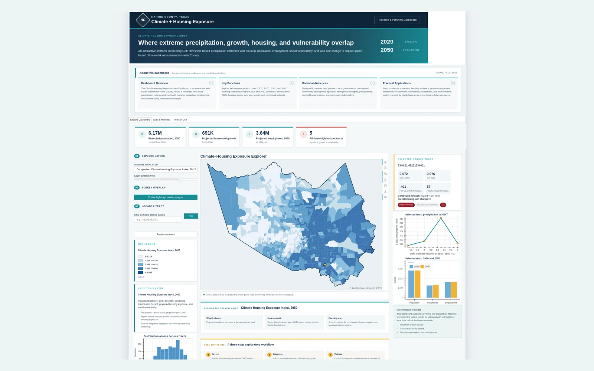
Interactive climate and housing decision support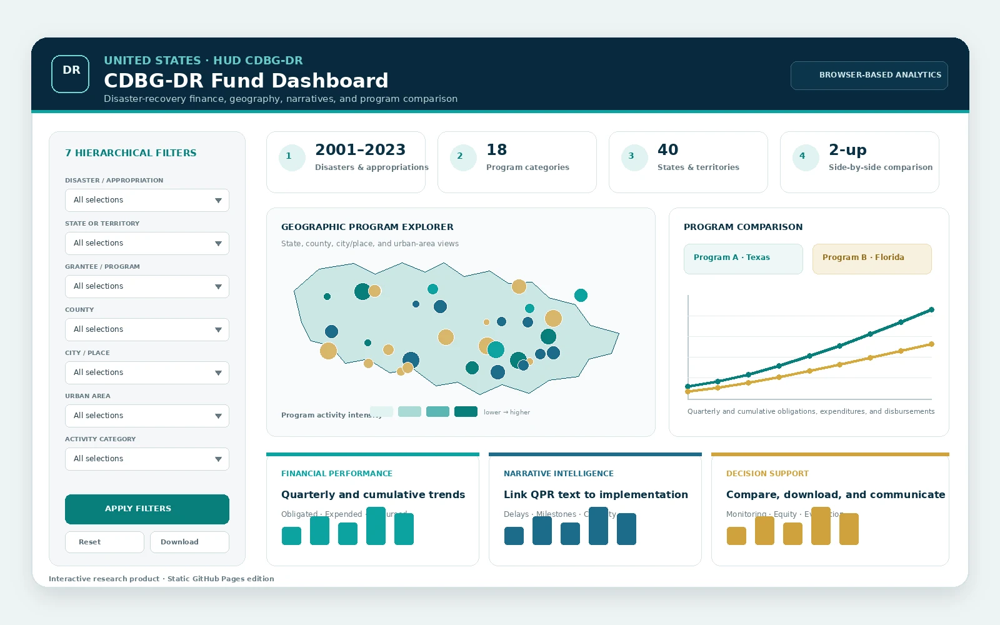
Live research productNational disaster-recovery finance and implementation intelligence
An interactive platform for exploring HUD Community Development Block Grant–Disaster Recovery programs, connecting project- and activity-level finance, Quarterly Performance Report narratives, and geography.
Place-based climate, growth, vulnerability, and housing decision support
An interactive platform showing how future precipitation extremes intersect with housing, population, employment, social vulnerability, and land-use change to support place-based climate-risk assessment.
Project dates, roles, funding, and descriptions are updated from the latest CV; visual materials are retained from the original GitHub webpage package.
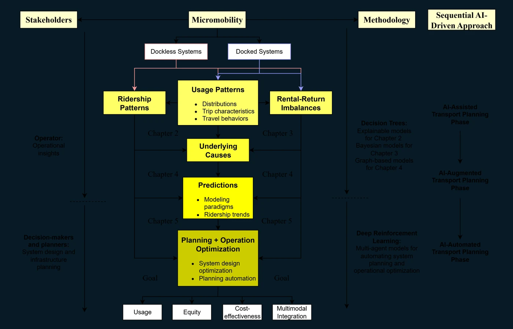
A research program integrating spatial analytics, predictive modeling, and planning automation.
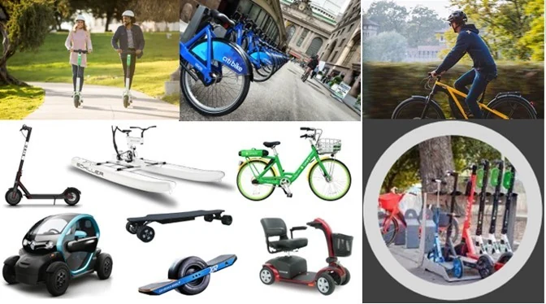
A statewide modeling framework integrating survey, spatial, and machine-learning methods.
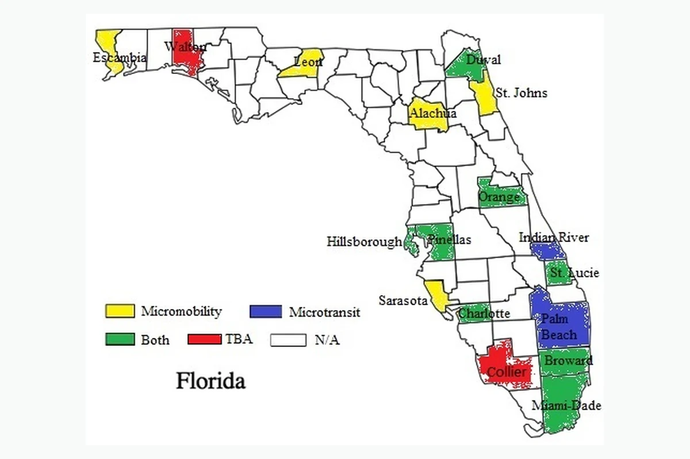
A synthesis of benefit-cost and economic-impact methods used in public transit.
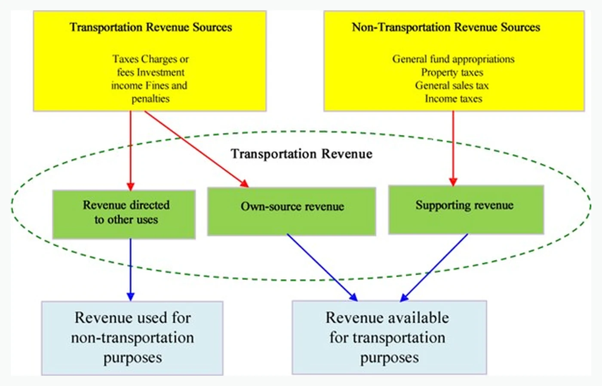
Phase I research on future transportation revenues and allocation processes.
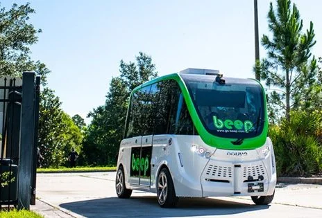
A case-study framework for evaluating autonomous microtransit implementation.
A statewide inventory of emerging mobility services.
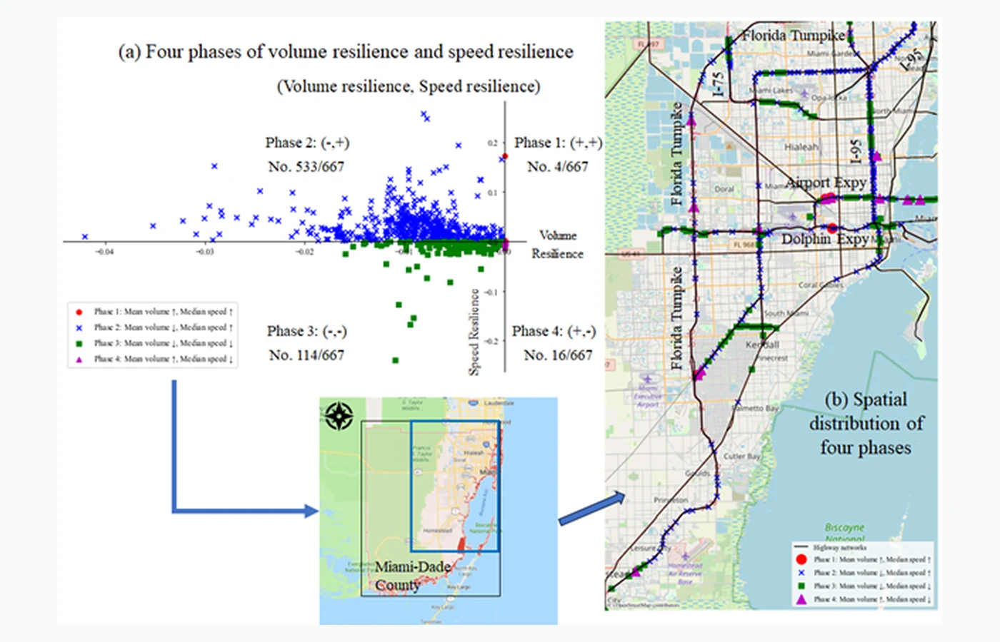
Characterization and forecasting of highway-network performance under hurricane disruption.
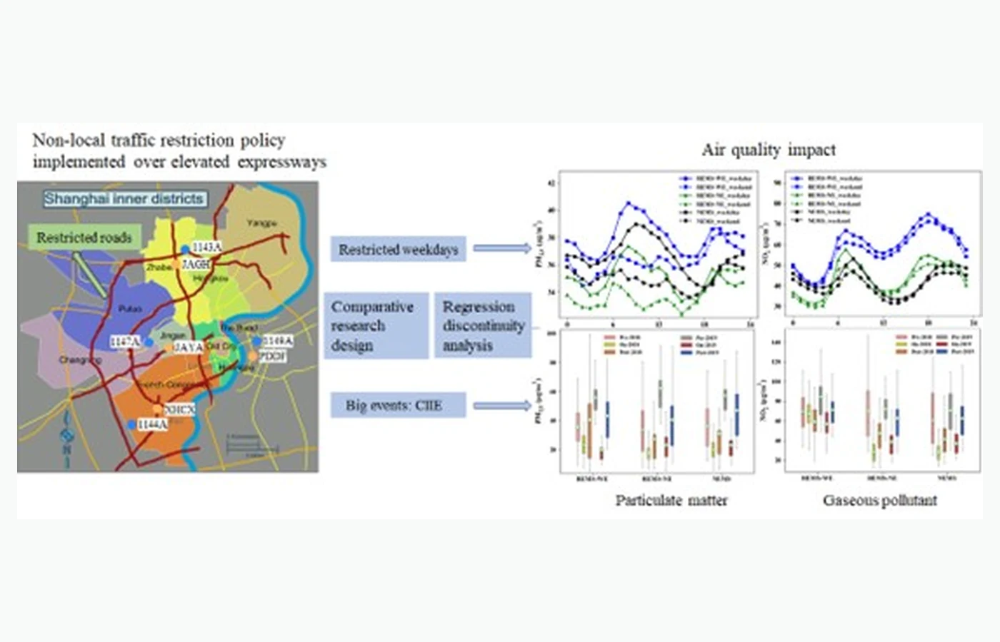
Research on transportation policies, infrastructure, and traffic-related pollutants.
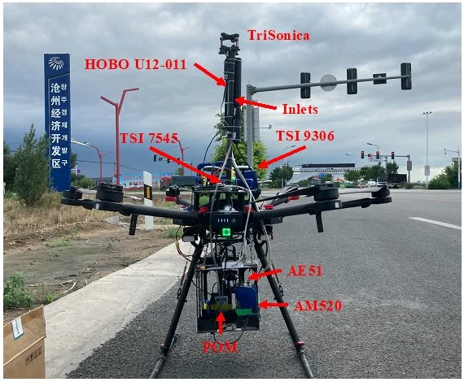
Vertical observation technologies using unmanned aerial vehicles and heavy-load airships.
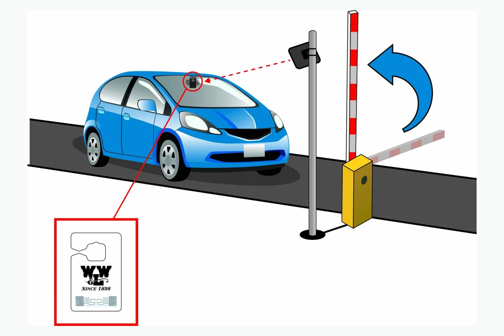
A prototype system designed to monitor illegal parking and improve charging efficiency and accuracy.
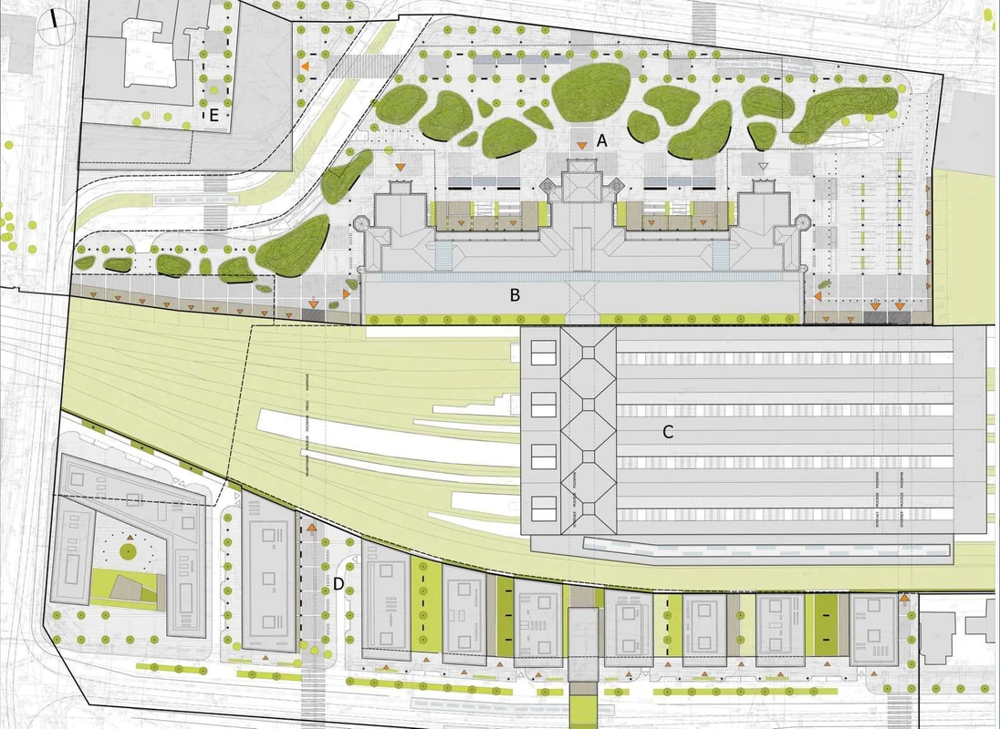
Practice in passenger and freight transport, centralized traffic control, train scheduling, and freight-station planning.
Programming languages and software listed in the CV include Python, MATLAB, R, Java, C/C++, ArcGIS, AutoCAD, PTV VISUM, TransCAD, SketchUp, FLUENT, Microsoft Office, and Origin.